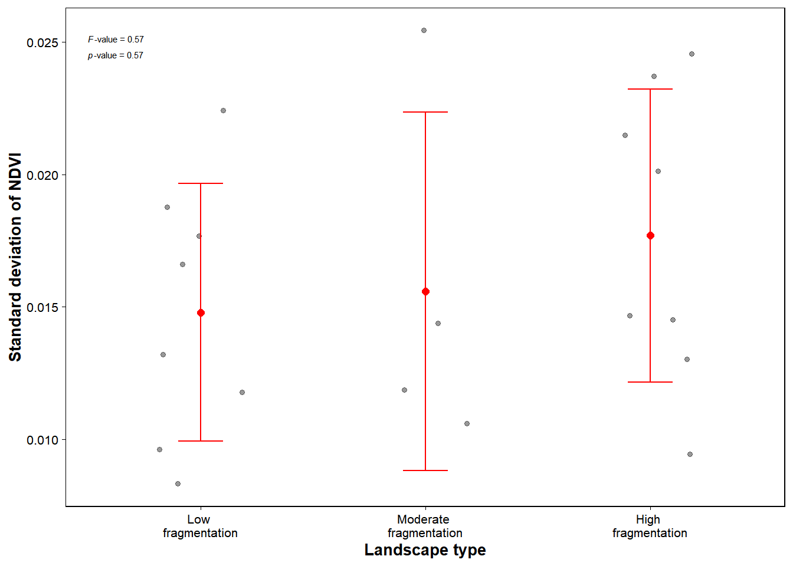
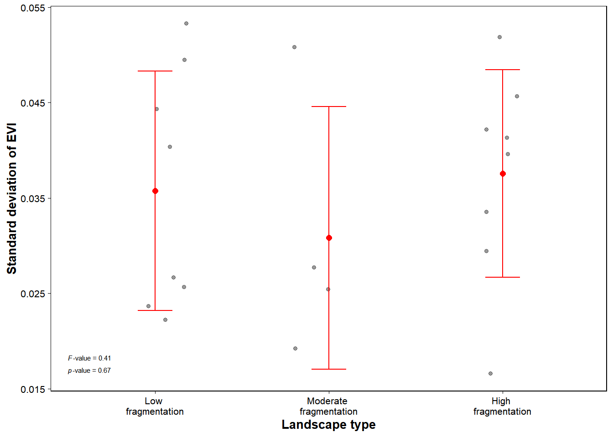

library(terra)
library(sf)
library(raster)
library(dplyr)
library(ggplot2)
library(stats)
library(landscapemetrics)
library(LSRS)
# Importing data
rm(list = ls()); gc()
set.seed(13)
new_crs <- CRS("+proj=utm +south +zone=21 +datum=WGS84 +units=m +no_defs")
# Tile 1 (80% of the lake)
Balbina_red_1 <- rast("LC09_L2SP_231061_20240826_20240827_02_T1_SR_B4.TIF")
Balbina_red_1 <- project(Balbina_red_1, new_crs)
Balbina_nir_1 <- rast("LC09_L2SP_231061_20240826_20240827_02_T1_SR_B5.TIF")
Balbina_nir_1 <- project(Balbina_nir_1, new_crs)
Balbina_band2_1 <- rast("LC09_L2SP_231061_20240826_20240827_02_T1_SR_B2.TIF")
Balbina_band2_1 <- project(Balbina_band2_1, new_crs)
# Tile 2 (20% of the lake)
Balbina_red_4 <- rast("LC09_L2SP_230061_20240819_20240820_02_T1_SR_B4.TIF")
Balbina_red_4 <- project(Balbina_red_4, new_crs)
Balbina_nir_4 <- rast("LC09_L2SP_230061_20240819_20240820_02_T1_SR_B5.TIF")
Balbina_nir_4 <- project(Balbina_nir_4, new_crs)
Balbina_band2_4 <- rast("LC09_L2SP_230061_20240819_20240820_02_T1_SR_B2.TIF")
Balbina_band2_4 <- project(Balbina_band2_4, new_crs)
# Calculating NDVI
Balbina_ndvi_1 <- (Balbina_nir_1 - Balbina_red_1) / (Balbina_nir_1 + Balbina_red_1)
Balbina_ndvi_4 <- (Balbina_nir_4 - Balbina_red_4) / (Balbina_nir_4 + Balbina_red_4)
Balbina_ndvi_4 <- resample(Balbina_ndvi_4, Balbina_ndvi_1)
res(Balbina_ndvi_4) == res(Balbina_ndvi_1)
Balbina_ndvi <- terra::merge(Balbina_ndvi_1, Balbina_ndvi_4)
remove(Balbina_ndvi_1)
remove(Balbina_ndvi_4)6 The across-habitat heterogeneity
To ensure that the assumption of low and similar habitat heterogeneity was met we measured forest heterogeneity of landscapes using the standard deviation of Normalized Difference Vegetation Index (NDVI) across the 10 sampled points within each landscape. We also calculated the standard deviation of Enhanced Vegetation Index (EVI), as this index is recommended for tropical regions because NDVI tends to saturate in areas of high biomass (Huete et al. 2002).
I used Landsat Collection 9 Level 2 (30 m) images retrieved from USGS. I followed the instructions on the same site to calculate the two vegetation index: Normalized Difference Vegetation Index (NDVI)(NDVI = (Band 5 - Band 4) / (Band 5 + Band 4)), and the Enhanced Vegetation Index (EVI = 2.5 * ((Band 5 – Band 4) / (Band 5 + 6 * Band 4 – 7.5 * Band 2 + 1))).
6.1 Loading packages and importing data
6.2 Calculating NDVI for the sampled islands in the landscapes
points <- read.csv("ants_env.csv")
points <- st_as_sf(points, coords = c("long_utm", "lat_utm"), crs = new_crs)
# NDVI per point
NDVI_1 <- extract(Balbina_ndvi, points, ID = FALSE)
NDVI_1 <- cbind(point_id = points$point_ID, NDVI_1)
colnames(NDVI_1)[2] = "NDVI"
NDVI_1 <- NDVI_1[-c(201:240),]
NDVI_1$landscape = points[-c(201:240),]$landscape
NDVI_1_sd <- tapply(NDVI_1$NDVI, NDVI_1$landscape, sd, na.rm = TRUE)
NDVI_1_sd <- as.data.frame(NDVI_1_sd)
colnames(NDVI_1_sd) <- "sd_NDVI"
NDVI_1_sd$landscape_id <- row.names(NDVI_1_sd)
NDVI_1_sd$landscape_id <- as.factor(NDVI_1_sd$landscape_id)
NDVI_1_sd$type <- NA
NDVI_1_sd$type[1:8] <- "FL"
NDVI_1_sd$type[9:12] <- "MS"
NDVI_1_sd$type[13:20] <- "SS"
NDVI_1_sd$type <- as.factor(NDVI_1_sd$type)
mod2 <- aov(NDVI_1_sd$sd_NDVI ~ NDVI_1_sd$type)
summary(mod2) # F=0.575, p=0.573 Df Sum Sq Mean Sq F value Pr(>F)
NDVI_1_sd$type 2 0.0000350 1.748e-05 0.575 0.573
Residuals 17 0.0005167 3.039e-05 6.3 Plotting the graph: NDVI
plot2 <-
ggplot(data = NDVI_1_sd,
aes(x= type, y=sd_NDVI)) +
labs(x = "Landscape type",
y = "Standard deviation of NDVI") +
geom_point(alpha = 0.4, position = position_jitter(width = 0.2)) +
stat_summary(fun = mean, geom = "point", color = "red", size = 2) +
stat_summary(fun.data = mean_sdl, fun.args = list(mult = 1),
geom = "errorbar", color = "red", width = 0.2) +
scale_x_discrete(labels = c("Low \nfragmentation", "Moderate \nfragmentation", "High \nfragmentation")) +
theme_bw(base_size = 10) +
theme(panel.grid = element_blank(),
panel.border = element_rect(colour = "black"),
axis.title = element_text(colour = "black", face = "bold"),
axis.text = element_text(colour = "black"),
axis.ticks = element_line(colour = "black", size = 0.25),
legend.position = "none") +
annotate("text", x = 0.5, y = 0.025,
hjust = 0, vjust = 0, size = 2,
parse = T,
label = as.character(expression(italic(F)*"-value = 0.57"))) +
annotate("text", x = 0.5, y = 0.025,
hjust = 0, vjust = 2, size = 2,
parse = T, label = as.character(expression(italic(p)*"-value = 0.57")))Warning: The `size` argument of `element_line()` is deprecated as of ggplot2 3.4.0.
ℹ Please use the `linewidth` argument instead.plot2
6.4 Calculating EVI for the sampled islands in the landscapes
# LSRS uses the same formula suggested by USGS: 2.5*(NIR - Red) / (NIR + 6*Red - 7.5*Blue + 1)
Balbina_evi_1 <- LSRS::EVI(a = Balbina_nir_1, b = Balbina_red_1, c = Balbina_band2_1, Pixel.Depth = 32)
Balbina_evi_4 <- LSRS::EVI(a = Balbina_nir_4, b = Balbina_red_4, c = Balbina_band2_4, Pixel.Depth = 32)
Balbina_evi_4 <- resample(Balbina_evi_4, Balbina_evi_1)
res(Balbina_evi_4) == res(Balbina_evi_1)
Balbina_evi <- terra::merge(Balbina_evi_1, Balbina_evi_4)
plot(Balbina_evi)# EVI per point
points <- read.csv("ants_env.csv")
points <- st_as_sf(points, coords = c("long_utm", "lat_utm"), crs = new_crs)
EVI_1 <- extract(Balbina_evi, points, ID = FALSE)
EVI_1 <- cbind(point_id = points$point_ID, EVI_1)
colnames(EVI_1)[2] = "EVI"
EVI_1$landscape = points$landscape
EVI_1_sd <- tapply(EVI_1$EVI, EVI_1$landscape, sd, na.rm = TRUE)
EVI_1_sd <- as.data.frame(EVI_1_sd)
colnames(EVI_1_sd) <- "sd_EVI"
EVI_1_sd$landscape_id <- row.names(EVI_1_sd)
EVI_1_sd$landscape_id <- as.factor(EVI_1_sd$landscape_id)
EVI_1_sd$type <- NA
EVI_1_sd$type[1:8] <- "FL"
EVI_1_sd$type[9:12] <- "MS"
EVI_1_sd$type[13:20] <- "SS"
EVI_1_sd$type <- as.factor(EVI_1_sd$type)mod3 <- aov(EVI_1_sd$sd_EVI ~ EVI_1_sd$type)
summary(mod3) #F=0.415, p=0.67 Df Sum Sq Mean Sq F value Pr(>F)
EVI_1_sd$type 2 0.0001223 6.117e-05 0.415 0.667
Residuals 17 0.0025055 1.474e-04 6.5 Ploting the graph: EVI
plot2 <-
ggplot(data = EVI_1_sd,
aes(x= type, y=sd_EVI)) +
labs(x = "Landscape type",
y = "Standard deviation of EVI") +
geom_point(alpha = 0.4, position = position_jitter(width = 0.2)) +
stat_summary(fun = mean, geom = "point", color = "red", size = 2) +
stat_summary(fun.data = mean_sdl, fun.args = list(mult = 1),
geom = "errorbar", color = "red", width = 0.2) +
scale_x_discrete(labels = c("Low \nfragmentation", "Moderate \nfragmentation", "High \nfragmentation")) +
theme_bw(base_size = 10) +
theme(panel.grid = element_blank(),
panel.border = element_rect(colour = "black"),
axis.title = element_text(colour = "black", face = "bold"),
axis.text = element_text(colour = "black"),
axis.ticks = element_line(colour = "black", size = 0.25),
legend.position = "none") +
annotate("text", x = 0.5, y = 0.018,
hjust = 0, vjust = 0, size = 2,
parse = T,
label = as.character(expression(italic(F)*"-value = 0.41"))) +
annotate("text", x = 0.5, y = 0.018,
hjust = 0, vjust = 2, size = 2,
parse = T, label = as.character(expression(italic(p)*"-value = 0.67")))
plot2